|
SILKROAD 계획관리시스템(Plan Management)은 소프트웨어 개발 프로세스의 단계별 산출 문서를 계획·관리하는 기능을 제공한다. 소프트웨어 개발 프로세스에서 각 단계별로 산출되어야 하는 산출 문서는 SILKROAD의 적합성관리시스템(Compliance Management)에서 해당 산업분야별로 분류해 놓은 표준산출 문서 템플릿을 가지고 오는 방법과 SILKROAD에서 기 수행된 프로젝트의 산출 문서를 재사용하는 방법을 통해 등록할 수 있다.
이와 같이 표준산출 문서 템플릿 혹은 기수행된 프로젝트에서 가져와 각 단계에 등록된 산출 문서는 계획관리시스템, 요구사항관리시스템, 기능시험관리시스템으로 등록하여 SILKROAD 문서 편집기 DOCS를 이용하여 산출문서를 수정할수 있다.
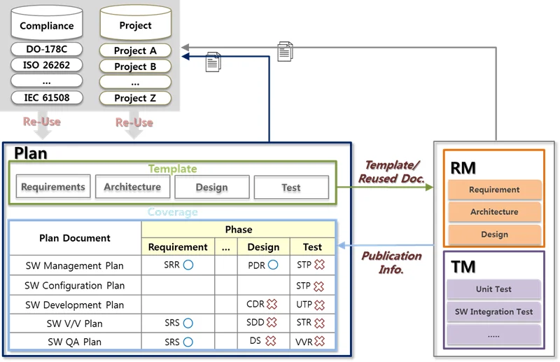 |
계획관리시스템(Plan Management)의 메인 화면 구성은 아래와 같다.
|
구분 | 명칭 | 설명 |
| SDLC Workproduct | Phase 및 문서 목록 |
| Workproduct Repository | 적합성관리 표준 템플릿(Compliance) 및 재사용(Re-use) 문서 목록 |
| Document View | SDLC Workproduct 영역에서 선택된 문서 뷰 |
| Output Workproduct | 계획문서 산출물 목록 |
① SDLC Wordkproduct 영역 상단의“New Phase” 버튼을 클릭한다.
② “New Phase” 정보창이 생성되면, Phase에 대한 필수(Name)/선택(Priority, Description) 내용을 기재한다.
③ ‘OK’ 버튼을 클릭하여 Phase 생성을 완료한다.
|
|
‘Phase’는 SILKROAD에서 문서를 관리하는 폴더를 의미한다. 소프트웨어 개발 단계별로 ‘Phase’를 생성하여 단계별로 문서를 작성하면 문서 관리를 편리하게 수행 할 수 있다. |
생성된 Phase를 더블클릭하면, Phase 정보창이 생성되며 입력 정보를 수정할 수 있다. 단, Phase 생성자, 프로젝트 관리자 및 Admin 권한을 가진 사용자 외에는 수정할 수 없다.
Phase는 하위 문서와 함께 드래그&드롭 또는 Order setting 기능으로 위치 이동이 가능하다.
① 정보를 변경하고자 하는 Phase를 선택하고 더블클릭한다.
② 선택한 Phase의 정보창이 생성된다.
③ 변경하고자 하는 Phase에 대한 정보를 기재한다.
④ ‘OK’ 버튼을 클릭하여 Phase 정보 변경을 완료한다. 변경내용이 없을 경우 ‘OK’ 버튼은 비활성화되어 있다.
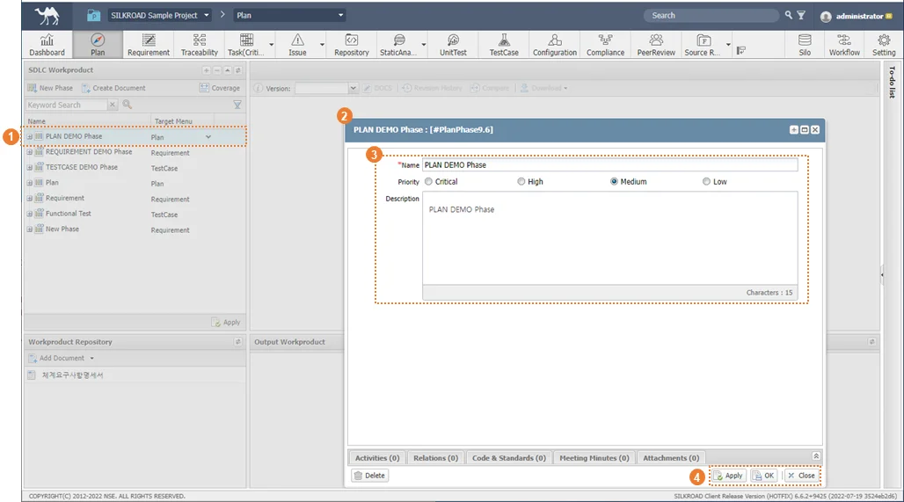 |
Target Menu가 지정되어 있는 Phase의 경우에는 정보를 변경할 수 없다. |
① 삭제하고자 하는 Phase를 우클릭하여 생성되는 컨텍스트 메뉴의 ‘Delete Item’ 버튼을 클릭한다.
② 혹은, Phase를 더블 클릭하여 생성되는 정보창 좌측 하단의‘Delete’ 버튼을 클릭한다.
|
③ ‘Delete’ 팝업창이 생성되면 ‘Yes’ 버튼을 클릭하여 Phase를 삭제한다.
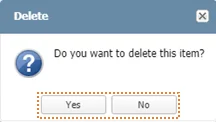 |
계획관리시스템에서 생성되어 요구사항관리시스템 또는 기능시험관리시스템에 적용된(Apply) Phase의 경우 계획관리시스템에서 삭제가 불가능하다.
단, 계획관리시스템에 적용된(Apply) Phase의 경우 계획관리시스템에서 삭제가 가능하다.
① 삭제하고자 하는 Phase가 적용된 요구사항관리시스템 또는 기능시험관리시스템에 접속한다.
|
② 계획관리시스템에서 적용된 Phase를 선택하고 마우스 우클릭하여 생성되는 컨텍스트 메뉴의 ‘Delete Item’ 버튼을 클릭한다.
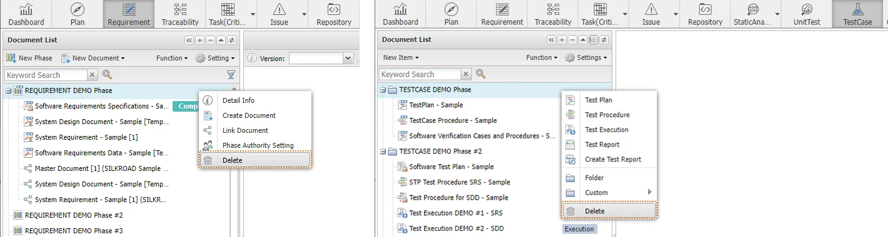 |
③ 혹은 Phase를 더블 클릭하여 생성되는 정보창 좌측 하단의‘Delete’ 버튼을 클릭한다.
① ‘Delete’ 팝업창이 생성되면 ‘Yes’ 버튼을 클릭하여 Phase를 삭제한다.
② 계획관리 시스템으로 이동한다.
③ 삭제하고자 하는 Phase에 취소선이 생성되어 있는지 확인하고, SDLC Workproduct 영역 우측 하단의 Apply 버튼을 클릭한다.
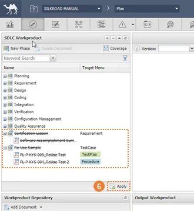 |
④ ‘Apply’ 창이 생성되면 ‘Yes’ 버튼을 클릭하여 삭제를 완료한다.
|
Requirement 메뉴로 Target Menu가 지정된 Phase에 하위문서가 존재할 경우 Phase 삭제가 불가능하므로, 등록되어 있는 문서를 먼저 삭제하여야 한다. TestCase 메뉴로 Target Menu가 지정된 Phase에 하위문서가 존재할 경우 하위문서 모두 삭제할지에 대한 확인 팝업이 생성된다. |
문서를 수정 또는 편집중이거나 사용자가 Lock을 설정한 문서는 Phase의 Target Menu 지정 후 Apply를 수행시 Target Menu가 지정되지 않는다.
① 삭제하고자 하는 Phase가 적용된 요구사항관리시스템 또는 기능시험관리시스템에 접속한다.
** 스샷 추가
② 계획관리시스템에서 적용된 Phase를 선택하고 마우스 우클릭하여 생성되는 컨텍스트 메뉴의 ‘Delete Item’ 버튼을 클릭한다.
③ 혹은 Phase를 더블 클릭하여 생성되는 정보창 좌측 하단의‘Delete’ 버튼을 클릭한다.
** 스샷 추가
④ ‘Delete’ 팝업창이 생성되면 ‘Yes’ 버튼을 클릭하여 Phase를 삭제한다.
⑤ 계획관리 시스템으로 이동한다.
⑥ 삭제하고자 하는 Phase에 취소선이 생성되어 있는지 확인한다. 이 때, Lock이 걸린 문서는 Target Menu가 지정되지 않았음에 따라 취소선이 생성되지 않는다.
⑦ 취소선이 생성되지 않은 문서를 선택하고 마우스 우클릭을 통하여 생성된 컨택스트 메뉴의 Delete 기능 또는 정보창 하단의 Delete 버튼을 클릭하여 문서를 삭제한다.
** 스샷 추가
⑧ SDLC Workproduct 하단의 Apply 버튼을 클릭한다.
⑨ ‘Apply’ 창이 생성되면 ‘Yes’ 버튼을 클릭하여 삭제를 완료한다.
** 스샷 추가
Lock이 걸린 문서는 Apply 수행시 Target Menu가 지정되지 않는다. Target Menu가 지정된 Phase에 Target Menu가 지정되지 않은 문서(Lock 이 걸린 문서)가 등록되어 있는 경우 취소선이 생성되어 있더라고 Apply 수행시 삭제되지 않는다. 먼저 Target Menu가 지정되지 않은 문서 삭제 후 Apply 수행을 해야 취소선이 생성된 Phase가 정상적으로 삭제된다. |
계획관리시스템에서는 적합성관리시스템에서 지원하는 표준의 Phase, 문서 목록 및 문서 템플릿을 가져와 사용할 수 있다.
적합성관리시스템에서 지원하는 표준은 아래와 같다.
∙ DO-178C, Software Considerations in Airborne System and Equipment Certification
∙ IEC 60880, Nuclear Power Plants-Instrumentation&Control-Software for computers in the safety systems
∙ 방위사업청 무기체계 소프트웨어 개발 및 관리 매뉴얼
∙ ISO 26262, Road vehicles-Funtional Safety
∙ IEC 62304, Medical device software-Software life cycle processes
∙ IEC 62279, Railway application-Communications, signalling and processing systems-Software for railway control and protection systems.
① Workproduct Repository 영역의 ‘Add Document’ 버튼 펼침단추를 클릭한다.
② ‘Compliance’ 버튼을 선택한다.
|
③ ‘Compliance’ 창이 생성된다.
④ 추가하고자 하는 표준의 탭을 선택한다.
⑤ ‘Output Templates’ 영역에서 가져오고자 하는 표준의 템플릿을 선택한다.
⑥ ‘OK’ 버튼을 클릭한다.
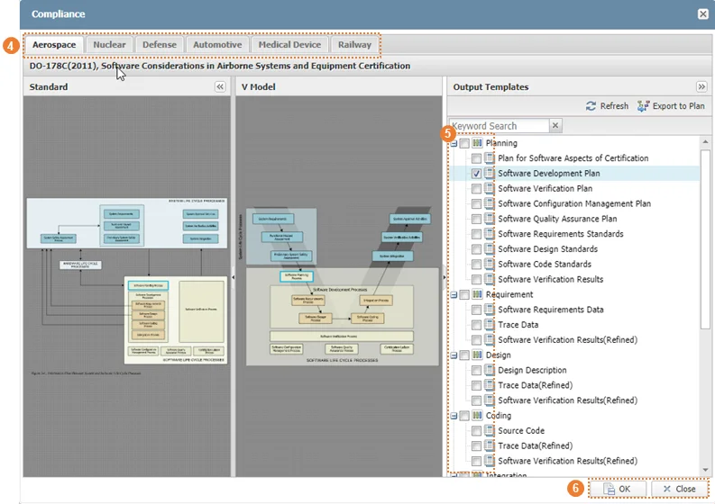 |
⑦ Workproduct Repository 영역에 선택한 템플릿이 추가된다.
⑧ ‘Workproduct Repository’ 영역에 추가된 문서를 드래그&드롭하여 ‘SDLC Workproduct’ 영역의 Phase로 추가한다.
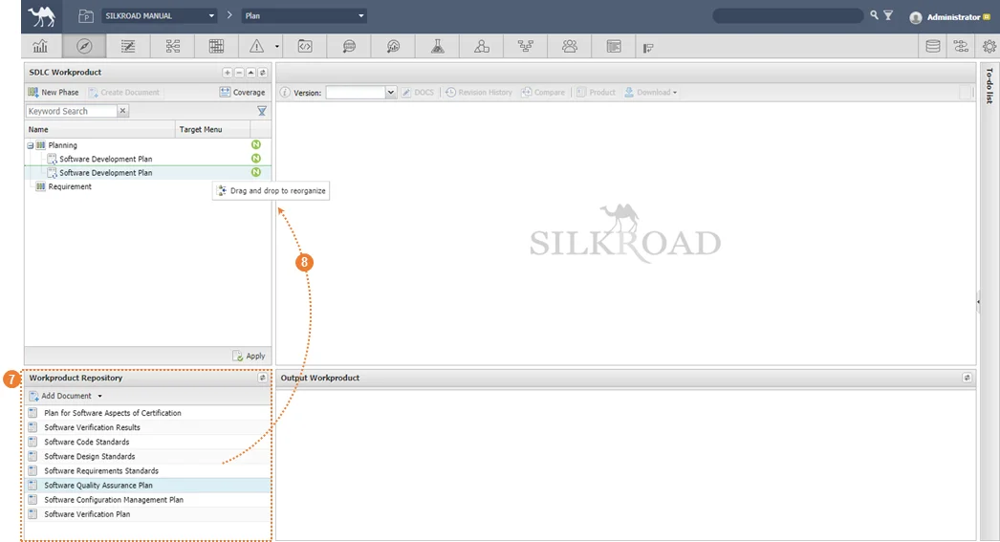 |
① Workproduct Repository 영역의 ‘Add Document’ 펼침 단추를 클릭한다.
② ‘Compliance’ 버튼을 선택한다.
|
③ ‘Compliance’ 창이 생성된다.
④ 추가하고자 하는 표준의 탭을 선택한다.
⑤ ‘Output Template’ 영역의 우측 상단의 ‘Export to Plan’ 버튼을 선택한다.
|
⑥ Import 창이 생성되면 ‘Yes’ 버튼을 선택한다.
|
⑦ ‘SDLC Workproduct’ 영역에 가져온 표준 프로세스의 Phase와 문서 목록이 추가된다.
|
적합성관리 표준 템플릿의 가져오기 기능을 통하여 추가된 문서는 |
계획관리시스템에서는 요구사항관리시스템, 기능시험관리시스템에 등록되어 있는 문서 및 다른 프로젝트에 등록되어 있는 문서를 가져와서 사용할 수 있다.
① ‘Workproduct Repository’ 영역의 ‘Add Document’ 펼침 단추를 클릭한다.
② ‘Re-Use’ 버튼을 선택한다.
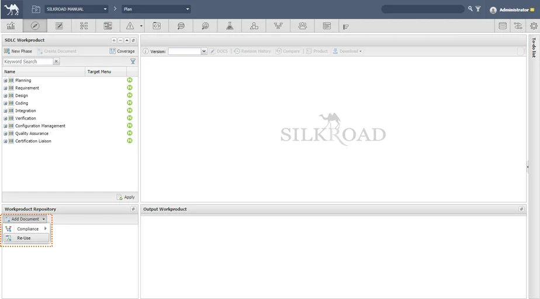 |
③ ‘Re-Use’ 창이 생성된다.
④ ‘Re-Use’창의 좌측 상단 Menu Tree 영역에서 Project의 목록 펼침 단추를 클릭하여 재사용하고자 하는 문서의 프로젝트를 선택한다.
⑤ Menu Tree 영역에서 Menu의 목록 펼침 단추를 클릭하여 재사용하고자 하는 문서의 메뉴를 선택한다.
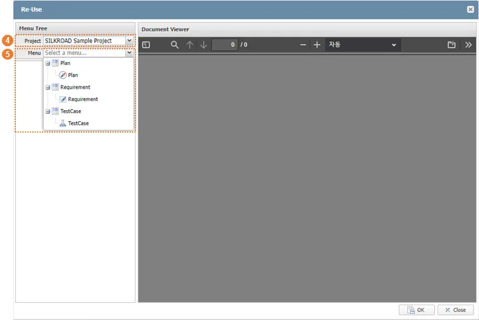 |
⑥ 선택한 프로젝트의 메뉴에 등록된 문서가 표시되면 재사용하고자 하는 문서를 체크한다.
⑦ ‘OK’ 버튼을 클릭한다.
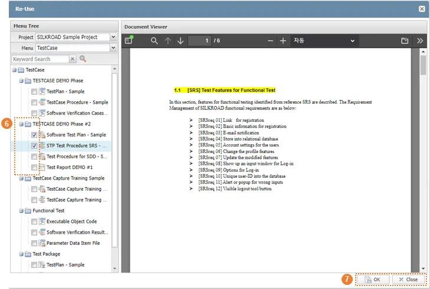 |
① Workproduct Repository 영역에 선택한 문서가 추가된다.
② ‘Workproduct Repository’ 영역에 추가된 문서를 드래그&드롭하여 ‘SDLC Workproduct’ 영역의 Phase로 추가한다.
|
사용자가 해당 프로젝트의 참여자로 등록되어 있으며, 해당 메뉴 및 문서에 대한 권한이 있어야만 문서를 가져올 수 있다. 권한이 None인 경우 해당 메뉴의 문서는 목록에 표시되지 않는다. |
① SDLC Workproduct에서 문서를 생성할 Phase를 선택한다.
② SDLC Workproduct 좌측 상단의 ‘Create Document’ 버튼을 클릭한다.
③ 혹은 마우스 우클릭하여 나타나는 콘텍스트 메뉴에서 ‘Create Document’를 실행한다.
④ 실크로드 문서 편집기 DOCS 가 실행된다.
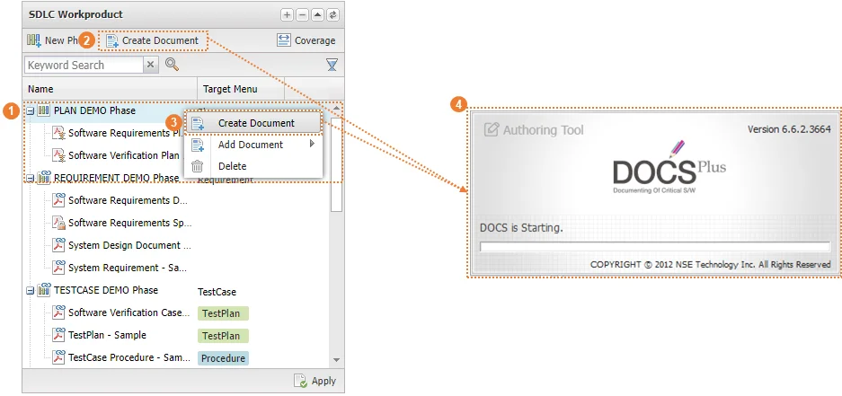 |
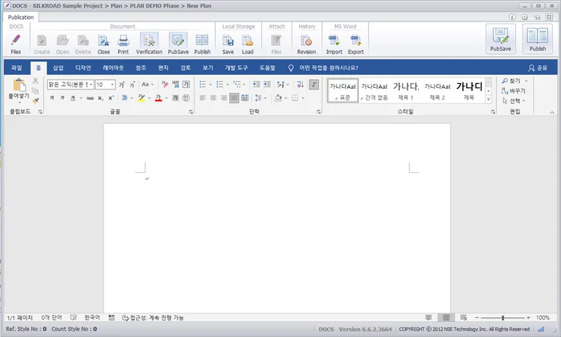 |
① SDLC Workproduct에서 1개 문서를 선택한다.
② Document Viewer 영역 상단의 ‘DOCS’ 버튼을 클릭한다.
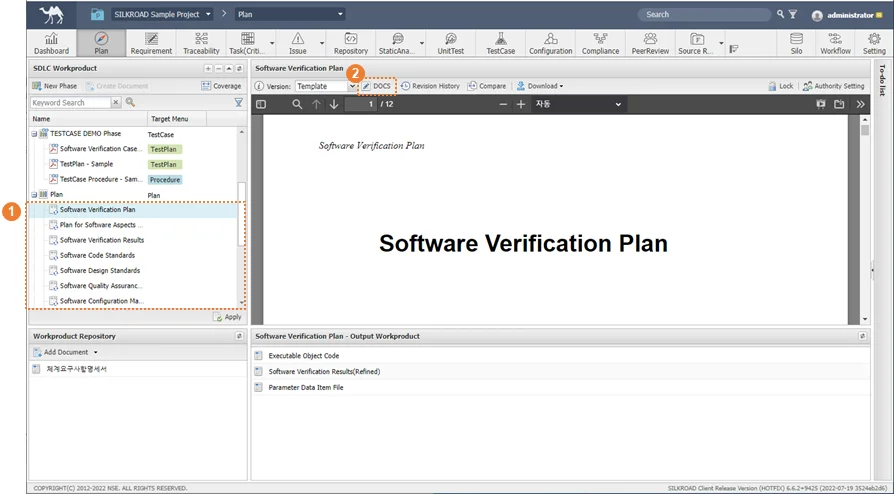 |
③ 실크로드 문서 편집기 DOCS 가 실행된다.
|
|
구분 | 명칭 | 설명 |
| 메뉴 바 | DOCS 버튼 영역(‘Publication’ 탭) |
| 문서 편집 영역 | 문서 편집 영역(MS-Word) |
새로운 문서를 생성하는 기능이며, 문서편집기에는 MS-Word가 내장되어 있다.
① ‘Publication’ 탭의 ‘Document’ 그룹에서 ‘Create’ 버튼을 클릭한다.
② ‘New Document’창이 생성되면 문서를 생성 할 Project 및 Phase를 선택한다.
③ ‘OK' 버튼을 클릭하여 문서 생성을 완료한다.
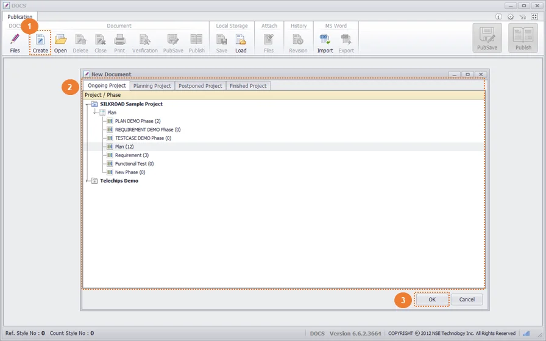 |
‘Create’ 버튼은 DOCS 내 MS-word가 열려 있지 않은 경우 활성화 된다. 계획관리 시스템 (Plan Management)에서 ‘Create Document’ 기능 실행 시, 기본적으로 MS-word의 새 문서가 생성되어 있으므로 DOCS에서 ‘Create’ 버튼은 비활성화가 되어 있다. 이러한 경우, ‘Close’ 버튼을 클릭한 후 ‘Create’ 기능을 실행한다. |
SILKROAD 서버에 저장된 문서를 불러오는 기능이다. 편집 권한이 있는 문서에 한하여 문서 불러오기 및 편집이 가능하며, 불러온 문서의 위치(프로젝트, 메뉴 및 Phase)는 수정할 수 없다.
‘Open’ 대상 문서는 사용자에게 쓰기(Write) 이상의 권한이 부여된 문서로 제한하며, 다른 사용자가 잠근(Lock)문서는 ‘Open’ 기능을 실행 할 수 없다. 기존 등록된 문서 중 Baseline에 등록된 문서는 Workflow 상태가 사용자가 설정한 특정 상태(Status)에 도달하기 전까지 ‘DOCS’ 를 실행할 수 없다.
① ‘Publication’ 탭의 ‘Document’ 그룹에서 ‘Open’ 버튼을 클릭한다.
② ‘Open Published Document’창이 생성되면, 프로젝트 목록에서 프로젝트 및 프로젝트 하위의 Phase를 선택한다.
③ 문서 목록에서 불러올 문서를 선택한다.
④ ‘OK’ 버튼을 클릭한다.
|
문서 삭제 기능은 Project Manager, Super 및 Admin 권한을 가진 사용자만 삭제할 수 있다.
① ‘Publication’ 탭의 ‘Document’ 그룹에서 ‘Delete’ 버튼을 클릭한다.
② ‘Delete’ 창이 생성되면 ‘Yes’ 버튼을 클릭한다.
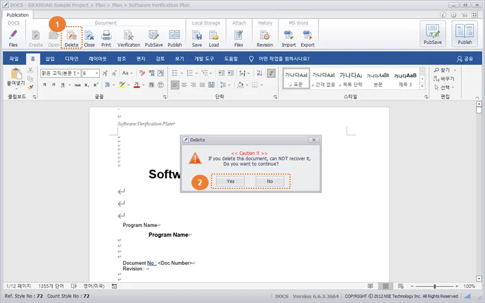 |
문서 삭제 기능은 Project Manager, Super 및 Admin 권한을 가진 사용자만 삭제할 수 있다.
① 삭제 할 문서를 선택 후 우클릭하여 생성되는 콘텍스트메뉴에서 ‘Delete Item’을 선택한다.
|
② ‘Delete’창이 생성되면‘Yes’버튼을 선택하여 삭제를 완료한다.
|
DOCS를 종료하지 않고 문서를 Publish 하지 않은 상태에서 종료하는 기능이다. 새로운 문서 작성(Create) 또는 열기(Open) 기능은 현재 DOCS에 열려 있는 문서를 닫기(Close) 한 후에 활성화 된다.
① ‘Publication’탭의 ‘Document’그룹에서 ‘Close’버튼을 클릭한다.
② ‘Close’창이 생성된다.
|
③ ‘Yes’버튼을 클릭하여 문서를 닫는다. 이 때, 해당 문서는 잠금해제(Unlock) 상태가 되어 쓰기(Write)이상의 권한이 있는 사용자가 편집 할 수 있다.
|
④ ‘No’ 버튼을 클릭하여 문서를 닫는다. 이 때, 해당 문서는 잠금(Lock) 상태가 되어 문서 작성자 본인 및 관리자(Administrator)만 편집 할 수 있다.
|
⑤ ‘Cancel 버튼을 클릭하면 문서 닫기 기능이 취소된다.
현재 편집 중인 문서를 인쇄하는 기능이다.
① ‘Publication’탭의 ‘Document’그룹에서 ‘Print’버튼을 클릭한다.
② 프린터를 선택하여 출력한다.
|
실크로드 요구사항 데이터는 Word 내 컨텐츠 컨트롤/북마크 객체를 활용한다. Verification은 사용자가 편집 중 컨텐츠 컨트롤/북마크 객체를 변경 또는 삭제하여 요구사항 데이터 오류로 Publish Fail등 오류가 발생 할 경우, 문서 내 컨텐츠 컨트롤/북마크 객체 데이터를 검증하고 복구하는 기능이다. 문서 검증 및 복구 내용은 아래와 같다.
요구사항으로 등록되지 않은 컨텐츠 컨트롤 삭제
요구사항으로 등록되지 않은 비정상적인 북마크 삭제
컨텐츠 컨트롤이 없는 요구사항 삭제
Pass/Fail 북마크 정리
북마크 위치 조정
요건 내용 비교 후 변경 요건 검사
① ‘Publication’탭의 ‘Document’그룹에서 ‘Verification’버튼을 클릭한다.
② 문서 검증 결과 창을 확인한다.
Abnormal ContentControl/Bookmarks ( ) are found and corrected : 비정상적인 컨텐츠컨트롤/북마크 데이터 ( )개를 수정하였음
No abnormal unit requirement was found : 문서 내 비정상적인 데이터 없음
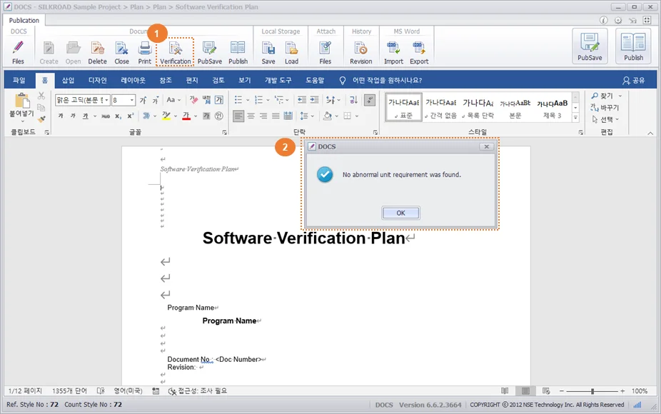 |
Word 내 컨텐츠 컨트롤/북마크 객체는 실크로드 요구사항 데이터와 연계되어 있어 문서 편집 시 주의해야 한다. 문서 내 요구사항 데이터 복사 시 Content Control이 복사되며, 복사된 Content Control은 요구사항 등록 시 오류가 발생할 가능성이 있다. 문서 내 요구사항 영역을 이동하기 위하여 잘라내기 시 실크로드 요구사항이 삭제된다. |
로컬 PC에 DOCS에서 작업한 문서 데이터(Word, 요구사항, 추적성)를 저장하는 기능이다. 저장한 데이터는 Local DOCS의 Recent Documents에서 확인할 수 있다. Local Save/Export와 기능 차이는 아래와 같다.
저장 대상 | 저장 위치 | 사용 목적 | |
Pub Save | Word 문서 요구사항 데이터 추적성 | 로컬 PC 시스템 지정 폴더 | Publish 전 문서 데이터 저장 |
Local Save | Word 문서 요구사항 데이터 | 로컬 PC 시스템 지정 폴더 | Word 임시 저장 /자동 저장 |
Export | Word 문서 요구사항 데이터 | 로컬 PC 사용자 정의 폴더 | 실크로드 접속이 안되는 외부에서 문서 편집 후 반영 |
① ‘Publication’ 탭의 ‘PubSave’ 버튼을 클릭한다.
② PubSave 결과 팝업창에서 ‘OK’ 버튼을 클릭한다.
PubSave 파일은 C:\Users\사용자계정\AppData\Local\SILKROAD\SavedPublication 폴더에 저장된다. PubSave 파일 삭제는 DOCS Files 화면의 Recent Documents 목록에서 우클릭하여 Delete로 가능하다. PubSave 파일은 문서의 최신 버전만 유지하며, 과거 버전은 저장하지 않는다. |
현재 문서를 사용자 PC에 임시 저장하는 기능이다. 문서의 Publish를 원하지 않을 경우 해당 기능을 사용하여 문서 작업이 완료 될 때까지 사용자의 로컬 저장소에 문서를 저장할 수 있다. 임시저장(수동/자동) 파일은 Workspace에서 지정한 Local Storage 폴더에 저장되며, DOCS Setting 메뉴에서 폴더 경로를 지정할 수 있다. 완료된 문서는 임시저장 문서 불러오기(Load)를 통해 DOCS에서 편집하고 Publish할 수 있다.
① ‘Publication’ 탭의 ‘Local Storage’ 그룹에서 ‘Save’ 버튼을 클릭한다.
② ‘Save to local storage’ 창이 생성된다.
③ ‘Enter the comments’ 항목에 사용자 코멘트를 작성한다.
④ ‘OK’ 버튼을 클릭한다.
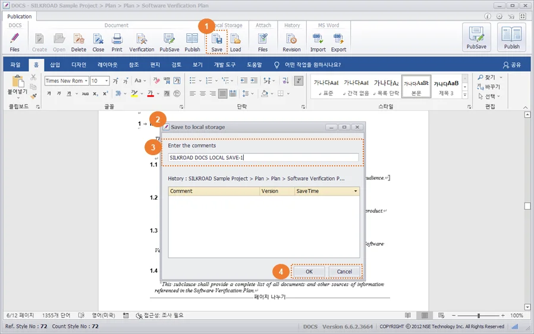 |
⑤ ‘Successfully saved’라는 알림창이 생성되면 ‘OK’버튼을 클릭하여 임시저장을 완료한다.
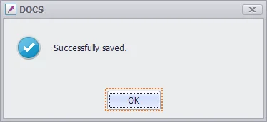 |
자동 저장된 파일은 덮어쓰기를 이용해 저장되어 가장 마지막 저장된 파일을 보관한다. 문서의 최신 변경 내용을 저장하나 등록된 요구사항의 속성(Properties) 정보는 Publish 시점을 기준으로 저장한다.
① DOCS 창 우측 상단의‘ ’(Setting) 버튼을 클릭한다.
’(Setting) 버튼을 클릭한다.
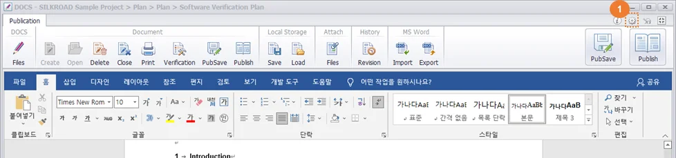 |
② Workspace 항목의 ‘...’ 버튼을 클릭하여 임시저장파일을 보관할 폴더를 지정한다.
|
③ Autosave ‘Enable’ 체크박스를 체크한다.
④ Save Interval 분(Minute) 또는 시간(Hour)을 지정한다.
|
⑤ Temp Files 항목의 ‘Browse’ 버튼을 클릭하면 정전 등을 통하여 DOCS가 비정상적으로 종료된 경우 임시적으로 저장된 폴더로 이동한다.
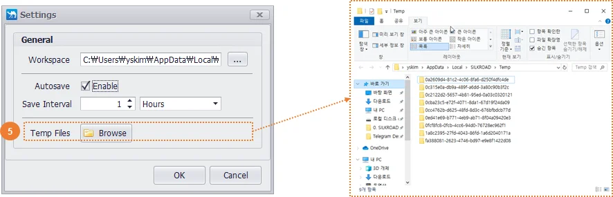 |
⑥ ‘OK’ 버튼을 클릭한다.
|
Workspace 변경 사항은 저장 후 DOCS 재실행시 반영되고, Autosave 기능은 저장 즉시 반영된다. 특별히 폴더를 지정하지 않은 경우 “C:\Users\컴퓨터이름\AppData\Local\SILKROAD\LocalStorage” 경로에 저장된다. 비정상적으로 DOCS가 종료된 경우 임시저장된 문서는 “C:\Users\컴퓨터이름\AppData\Local\SILKROAD\Temp” 경로에 저장된다. |
임시저장(Save)을 통해 사용자 PC에 저장한 문서를 DOCS로 불러오는 기능이다. Local Load 문서는 ‘Local Storage’의 모든 임시저장(수동/자동) 파일을 대상으로 한다.
문서 임시저장 후 실크로드 상의 해당 문서가 Publish되어 버전이 상승한 경우 이전 버전인 임시저장 파일은 읽기전용 상태로 불러오기 기능을 실행 할 수 있다. 버전이 0인 문서를 임시저장 후 ‘Load’ 하는 경우 ‘New Document’ 생성을 위한 팝업이 제공된다.
① ‘Publication’ 탭의 ‘Local Storage’ 그룹에서 ‘Load’ 버튼을 클릭한다.
② ‘Load from Local Storage’창이 생성된다.
③ 문서 목록에서 불러올 파일을 선택한다.
④ ‘Load’ 버튼을 클릭한다.
|
⑤ 선택한 문서가 DOCS 에 표시되며 성공적으로 파일이 로드되었음을 알려주는 알림창이 생성된다.
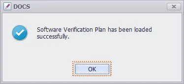 |
사용자 PC에 있는 파일을 선택하여 현재 작업 중인 문서의 첨부파일로 등록한다. 첨부된 파일은 요구사항관리시스템의 문서 정보 창( ) ‘Attachments’ 탭에서도 열람/다운로드할 수 있다.
) ‘Attachments’ 탭에서도 열람/다운로드할 수 있다.
① ‘Publication’탭의 ‘Attach’그룹에서 ‘Files’버튼을 클릭한다.
② ‘Attachments’창이 생성되면 좌측 상단의 ‘Browse’버튼을 클릭한다.
③ 윈도우즈 탐색기에서 첨부할 파일을 선택한다.
④ ‘열기’버튼을 클릭한다.
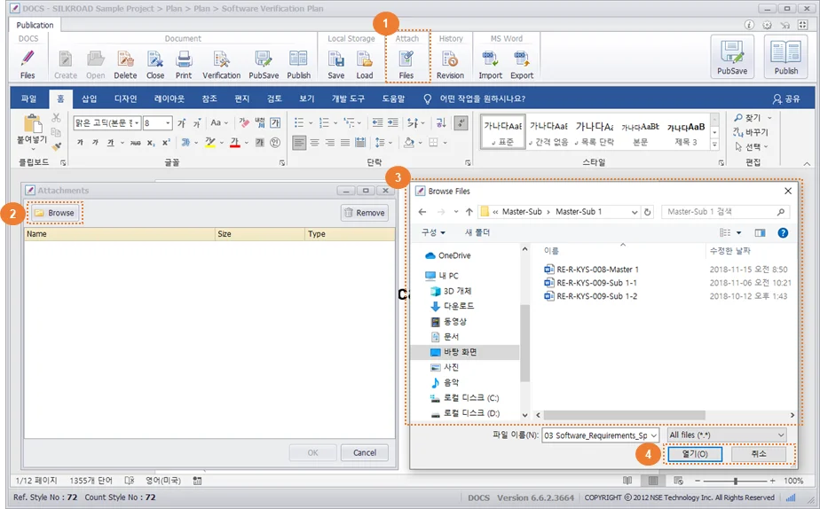 |
⑤ ‘OK’버튼을 클릭한다.
⑥ ‘Publication’탭의 ‘Attach’그룹에서 ‘Files’버튼 옆에 첨부한 파일 수량이 표시된다.
|
작업 중인 문서에 첨부된 파일은 삭제하는 기능이다.
① ‘Publication’탭의 ‘Attach’그룹에서 ‘Files’버튼을 클릭한다.
② ‘Attachments’창이 생성된다.
③ 첨부파일 목록에서 삭제할 파일은 선택한다.
④ 우측 상단 ‘Remove’버튼을 클릭한다.
|
⑤ Attachments 창에서 해당 첨부문서가 삭제되는 것을 확인하고 ‘OK’ 버튼을 클릭한다.
⑥ ‘Publication’탭의 ‘Attach’그룹에서 ‘Files’버튼 옆에 첨부한 파일 수량이 삭제한 첨부파일 수량만큼 줄어든다.
|
사용자의 PC에 저장된 MS-Word 파일을 DOCS로 불러오는 기능이다. 암호가 설정된 문서를 Import 하는 경우, 암호입력 후 파일을 불러올 수 있다. 기존 실크로드에 등록되어 있는 문서는 Import 시 새 문서 (Create)로 등록하거나 기존 등록된 문서에 ‘Update’를 선택할 수 있다.
기존 실크로드에 등록되어 있는 문서에 ‘Update’ 하는 경우 기존 등록된 문서의 내용이 Import 문서의 내용으로 대체된다.
‘Update’ 선택 시 대상 문서가 삭제된 경우 Update를 할 수 없으며 이에 대한 알림 팝업이 생성된다. ‘Update’ 선택 시 대상 문서에 대한 사용자의 권한이 Read 이하인 경우 Update를 할 수 없으며 이에 대한 알림 팝업이 생성된다.
① ‘Publication’ 탭의 ‘MS Word’ 그룹에서 ‘Import’ 버튼을 클릭한다.
② 탐색기창이 실행되면 불러올 MS-Word 문서를 선택한다.
③ ‘열기’ 버튼을 클릭한다.
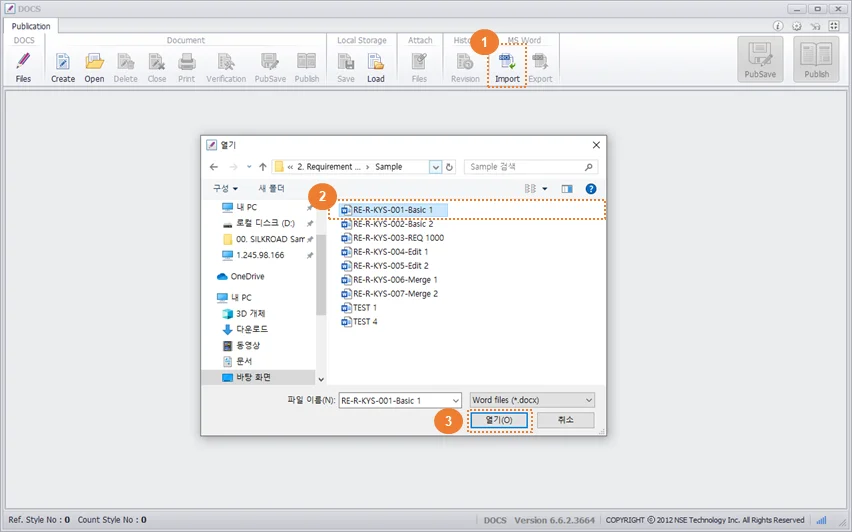 |
④ ‘Import’ 창이 생성된다.
⑤ 해당 문서가 SILKROAD Plan Management에 등록되어 있지 않은 경우‘Create’ 버튼을 클릭하여 문서를 등록한다.
|
⑥ ‘Create Document’화면에서 문서를 저장할 프로젝트 및 하위 Phase를 선택한다.
⑦ ‘OK’ 버튼을 클릭한다.
|
⑧ ‘Publication’ 탭의 ‘Publish’ 버튼을 클릭한다.
⑨ ‘Publish’ 창이 생성되면 문서에 대한 정보를 입력하고 ‘Publish’ 또는 ‘OK’ 버튼을 클릭한다.
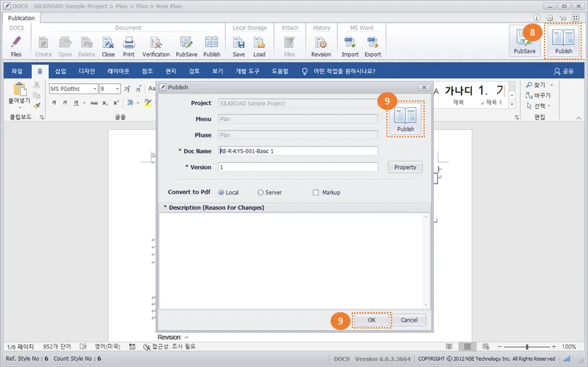 |
⑩ 해당 문서가 선택한 Phase에 등록된다.
|
① ‘Publication’ 탭의 ‘MS Word’ 그룹에서 ‘Export’ 버튼을 클릭한다.
② Export 경로와 파일 이름을 지정한다.
③ ‘저장’ 버튼을 클릭한다.
|
Export한 문서는 DOCS의 문서생성 정보(버전, 위치 등)와 등록된 요구사항 정보(북마크 ID, 콘텐츠컨트롤)를 가진다. |
① ‘Publication’탭의 ‘MS Word’그룹에서‘Import’버튼을 클릭한다.
② 윈도우즈탐색기에서 이전에 Export한 불러올 문서를 선택한다.
③ ‘열기’버튼을 클릭한다.
|
④ ‘Import’ 창이 생성되면 ‘Update’를 선택한다.
(Update선택 시) 불러오는 문서로 SILKROAD에 저장된 기존 문서가 업데이트 된다. 문서의 변경내용이 모두 자동으로 적용된다.
(Create 선택 시) 불러오는 문서는 기존 문서와는 별개로 SILKROAD에 새로운 문서로 생성된다.
(Cancel 선택 시) Import 기능이 취소된다.
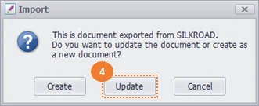 |
DOCS의 ‘Publish’기능은 DOCS에서 작성된 문서, 요구사항 및 추적성 정보 등을 SILKROAD 서버에 저장하는 기능이다.
① DOCS 우측 상단 ‘Publish’ 버튼을 클릭한다.
② 필수 입력항목인 문서 제목(Doc Name), 버전(Version) 및 설명(Description)을 입력한다.
③ ‘Publish’ 버튼 또는 ‘OK’ 버튼을 클릭한다.
|
|
구분 | 명칭 | 설명 |
| Project | 문서가 저장될 프로젝트 명칭 |
| Menu | 문서가 저장될 메뉴 명칭 |
| Phase | 문서가 저장될 Phase 명칭 |
| Doc Name* | 문서 명칭 (필수 입력) |
| Version* | 문서 버전 (필수 입력) |
| Convert To Pdf | 해당 항목 선택 시, PDF로 문서를 변환하는 과정을 사용자 네트워크가 아닌 서버에서 처리하는 기능 |
| Description (Reason For Changes)* | 개정 이력 (필수 입력) |
| Publish | 문서 발행(서버 저장) |
| Property | 문서 속성 정보 |
| OK / Cancel | 문서 발행(OK) / 문서 발행 취소(Cancel) |
문서의 버전(Version)은 시스템에서 기본적으로‘1’로 설정되며, Publish 실행 시 자동으로 이전 문서 버전 +1로 제공된다. 또한 문서의 버전은 사용자가 수정 할 수 있다. |
Convert to Pdf의 기능은 다음과 같다. Server : Server 에 PDF 변환을 위한 대기 등록, Server에 등록된 순서대로 Pdf 변환을 진행한다. Local : 사용자 Local PC의 자원을 활용하여 Pdf 변환을 진행한다. Markup : 변경내용 표시 및 해제에 대한 설정을 진행한다. |
문서의 Publish 이력을 테이블로 생성한다. 해당 정보는 문서의 Publish 일자, 버전, 설명(Description)을 기반으로 생성된다. 테이블을 복사하여 문서 내에 붙여 넣을 수 있다.
① ‘Publication’탭의 ‘History’그룹에서 ‘Revision’버튼을 클릭한다.
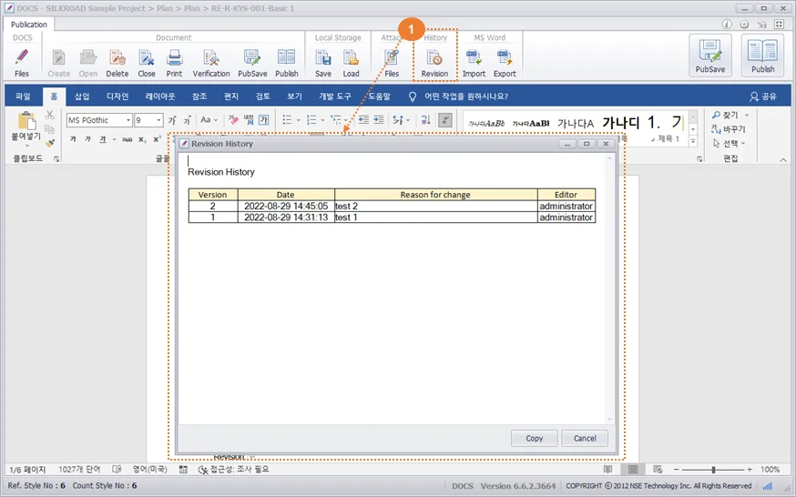 |
‘Revision History’화면에서 우측 하단 ‘Copy’버튼을 클릭하면 Revision History 내용을 클립보드에 복사할 수 있으며, 복사된 내용은 문서에서 붙여넣기(Ctrl+V) 할 수 있다. |
SILKROAD 계획관리시스템에서 구성한 Phase 및 문서 목록을 각 트래커(Tracker=Menu)에 적용하기 위한 기능으로 Target Menu 설정 기능을 통해 선택된 트래커로 Phase와 문서 목록이 자동으로 등록된다.
① SILKROAD Plan Management 로 설정하고자 하는 Phase를 선택한다.
② 선택한 Phase의 Target Menu 셀을 클릭한다.
③ 펼침목록 중 Plan(또는 사용자가 생성한 Plan 메뉴)을 선택한다.
④ ‘Apply’ 버튼을 클릭하여 설정을 저장한다.
|
⑤ 해당 Phase의 Target Menu 칼럼에 Plan으로 지정됨이 표시된다.
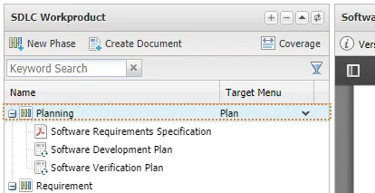 |
① SILKROAD 요구사항관리시스템으로 설정하고자 하는 Phase를 선택한다.
② 선택한 Phase의 Target Menu 셀을 클릭한다.
③ 펼침목록 중 Requirement(또는 사용자가 생성한 Requirement 메뉴)를 선택한다.
④ ‘Apply’ 버튼을 클릭하여 설정을 저장한다.
|
⑤ 해당 Phase의 Target Menu 칼럼에 Requirement로 지정됨이 표시된다.
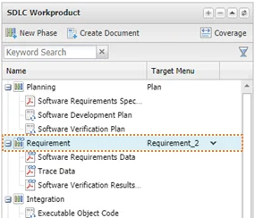 |
문서에 Lock 이 걸려 있는 경우 Target Menu 지정을 통하여 선택된 요구사항관리시스템 메뉴로 등록되지 않는다. Lock을 해제한 후 Apply를 재시도할 경우 해당 메뉴로 등록된다. |
기능시험관리시스템에서 작성하는 테스트 관련 문서는 Test Procedure 문서와 Test Plan 문서 이다. Phase를 기능시험관리시스템 메뉴로 선택하고 문서의 종류에 따라 Test Procedure 또는 Test Plan을 선택한다.
① 기능시험관리시스템을 대상으로 설정하고자 하는 Phase를 선택한다.
② 선택한 Phase의 Target Menu 셀을 클릭한다.
③ 펼침목록 중 TestCase(또는 사용자사 생성한 TestCase 메뉴)를 선택한다.
|
④ Phase의 산출 문서를 클릭한다.
⑤ 펼침목록 중 Test Procedure 또는 Test Plan을 선택한다.
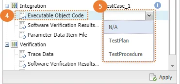 |
⑥ ‘Apply’ 버튼을 클릭하여 설정을 저장한다.
|
⑦ 해당 Phase의 Target Menu 칼럼에 TestCase로 지정됨이 표시된다.
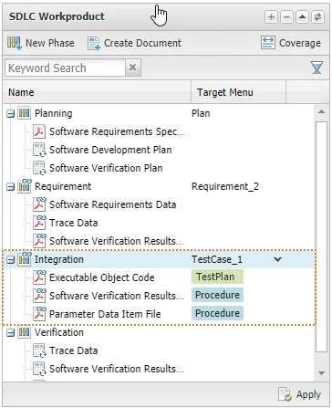 |
Target Menu가 지정되지 않은 문서가 존재할 경우 기능시험관리시스템으로 지정할 수 없다. 문서에 Lock이 걸려 있는 경우, 문서에 대한 Target Menu를 지정할 수 없다. |
① ‘SDLC Workproduct’에서 이동시키고자 하는 문서를 선택한다.
② 방법 1. 드래그&드롭을 통하여 원하는 Phase 로 문서를 이동시킨다.
|
③ 방법 2. SDLC Workproduct 영역 상단의 ‘Order Setting’ 버튼을 클릭하고, List 하단의 Up/Down 버튼을 통하여 원하는 위치로 이동시킨 후 Apply Index 버튼을 클릭하여 저장한다.
|
Target Menu로 지정되어 있는 Phase에 등록된 문서는 이동이 불가하다. |
항공, 원자력, 철도, 자동차, 의료기기, 국방 등 산업분야의 소프트웨어 개발 표준에서 제시하는 계획문서별 산출문서를 설정하고 계획문서와 산출문서 간 커버리지를 관리하는 기능을 제공한다.
① ‘SDLC Workproduct’ 영역에서 Target Menu에 Plan으로 지정되어 있는 Phase에 등록되어 있는 계획문서를 선택한다.
② ‘Output Workproduct’ 영역에 선택된 문서 명이 표시된다.
|
③ 방법 1. 계획문서에서 명시하는 산출문서를 ‘SDLC Workproduct’ 영역에서 선택하고 드래그&드롭하여 ‘Output Workproduct’ 영역으로 추가한다.
|
④ 방법 2. Output Workproduct 영역을 마우스 우클릭하여 생성되는 컨텍스트 메뉴인 Add document 기능을 실행한다. ‘Plan Tree’ 창이 생성되면 등록하고자 하는 Document 앞의 체크박스를 체크하고 하단의 Apply 버튼을 클릭하여 추가한다.
|
① 방법 1. ‘Output Workproduct’추가한 문서를 선택 후 마우스 우클릭을 통하여 삭제할 수 있다.
|
② 방법 2. Output Workproduct 영역을 마우스 우클릭하여 생성되는 컨텍스트 메뉴인 Add document 기능을 실행한다. ‘Plan Tree’ 창이 생성되면 삭제하고자 하는 Document 앞의 체크박스를 체크해제하고 하단의 Apply 버튼을 클릭하여 추가한다.
① ‘Coverage’ 버튼을 클릭한다.
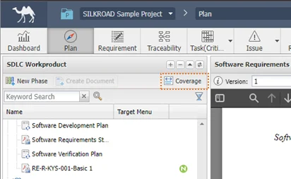 |
② ‘Coverage’ 창이 생성된다.
③ 계획문서(Plan) 목록이 좌측 열에 표시된다.
④ ‘SDLC Workproduct’ 영역에 생성된 Phase 목록이 맨 위 행에 표시된다.
⑤ 각 Phase 별 계획문서 산출문서명, 버전 정보, 마지막 저장 날짜가 표시된다.
|
⑥ ‘ ’: Target Menu가 설정된 Phase에 등록된 Document 또는 Target Menu가 지정된 Document를 의미한다. Coverage 창에서 해당 문서를 더블 클릭할 경우 문서 정보창이 생성된다.
’: Target Menu가 설정된 Phase에 등록된 Document 또는 Target Menu가 지정된 Document를 의미한다. Coverage 창에서 해당 문서를 더블 클릭할 경우 문서 정보창이 생성된다.
⑦ ‘’: Target Menu가 설정되지 않은 Phase에 등록된 Document를 의미한다.
Coverage 매트릭스를 MS-Excel 파일로 내보내는 기능이다.
① Coverage 창 좌측 상단의 ‘Export’ 버튼을 클릭한다.
② MS-Excel 파일이 다운로드된다.
③ Coverage 매트릭스와 동일한 형태로 MS-Excel 파일이 생성된다.
|
① ‘SDLC Workproduct’ 영역에서 정보를 확인하고자 하는 문서를 선택한다.
② ‘ ‘ 버튼을 클릭한다.
‘ 버튼을 클릭한다.
③ 문서 정보창이 생성된다.
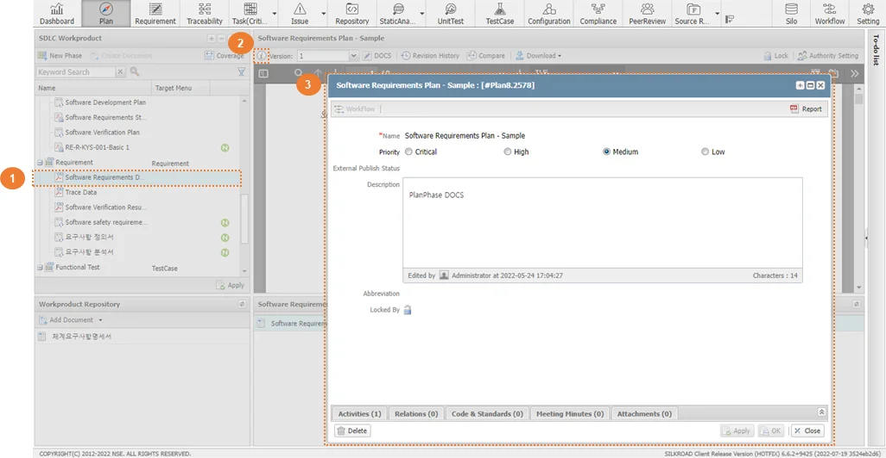 |
① ‘SDLC Workproduct’ 영역에서 버전별 문서 내용을 확인하고자 하는 문서를 선택한다.
② Version 펼침 단추를 클릭한다.
③ 문서 뷰에 해당 버전의 문서 내용이 표시된다.
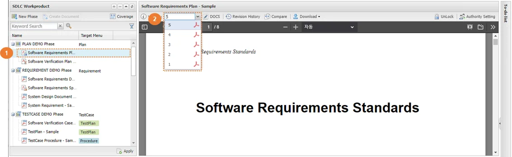 |
문서의 Publish 이력을 확인할 수 있다. 문서 Version(버전), Description(설명), Editor(작성자), Modified(Publish 날짜) 등 DOCS에서 문서 Publish시 입력되는 정보 표시하는 기능이다.
① ‘SDLC Workproduct’ 영역에서 리비전 정보를 확인하고자 하는 문서를 선택한다.
② ‘Revision History’ 버튼을 클릭한다.
|
③ ‘Revision History’ 창이 생성된다.
④ 해당 문서에 대한 Version 별 Description, Editor, Revision Date, Baseline Version, Change Request 정보를 확인할 수 있다.
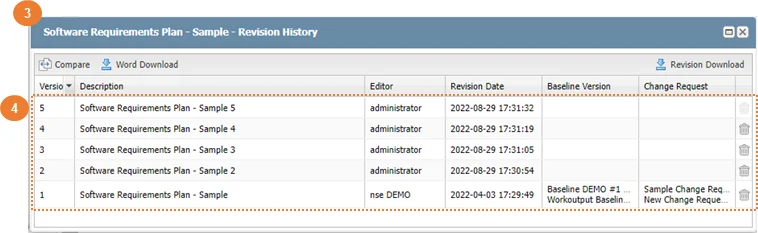 |
⑤ 휴지통 아이콘을 클릭하여 최신 이력을 제외한 Publish 이력을 삭제할 수 있다.
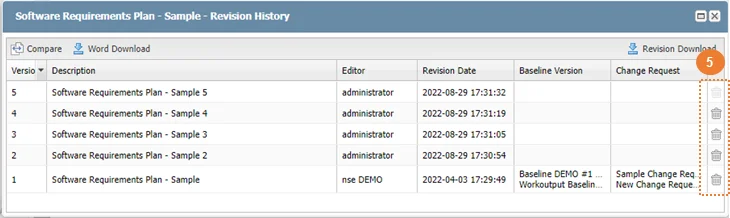 |
문서의 버전 간 변경내용을 비교할 수 있다.
① 버전 간 변경내용을 비교하고자 하는 문서를 선택한다.
② 문서뷰어의 ‘Compare’ 버튼을 선택한다.
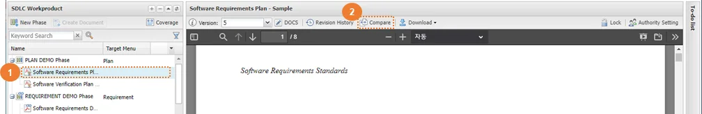 |
③ ‘Document Compare’ 창이 생성된다.
④ ‘Base Version’, ‘Compare Version’을 통해서 비교하고자 하는 문서 버전을 선택한다.
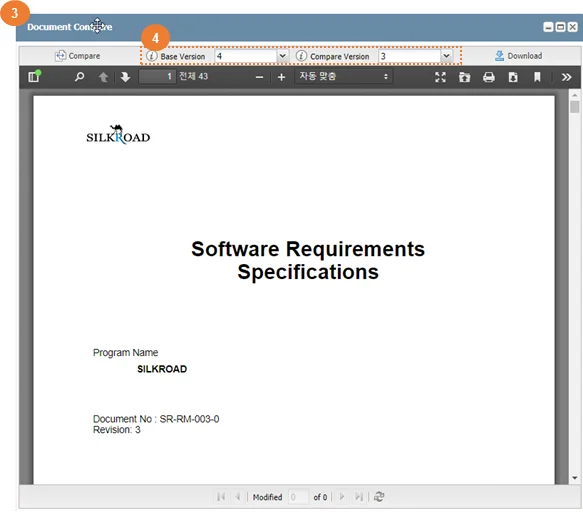 |
⑤ Compare 버튼을 선택한다.
⑥ Base Version을 기본으로 하여 Compare Version과 변경된 내용이 표시된다.
⑦ ‘Download’ 버튼을 클릭하면 선택한 버전에 대한 변경내용이 표시된 PDF 파일이 다운로드 된다.
|
① 다운로드하고자 하는 문서를 선택한다.
② 문서뷰어의 Download 버튼을 클릭하고, 펼침목록의 Download PDF, Download Word 중 다운로드받고자 하는 문서 형태를 선택한다.
③ 로컬의 다운로드 경로(C:\Users\‘컴퓨터 이름’\Downloads)에 저장된다.
|
권한 없는 사람의 문서 변경을 방지하고자 Download Word 기능은 Admin, Project Manager 권한을 가진 자만 다운로드 가능하다. |
작성자, 관리자 또는 권한을 부여 받은 사용자는 문서 잠금/해제 기능을 사용할 수 있다. 문서 잠금/해제 상태는 이미지(잠긴 상태:  , 잠기지 않은 상태:
, 잠기지 않은 상태:  )로 표시된다. 이미지와 함께 표시되는 텍스트는 설정 가능한 잠금/해제 상태를 명시한다.
)로 표시된다. 이미지와 함께 표시되는 텍스트는 설정 가능한 잠금/해제 상태를 명시한다.
|
구분 | 명칭 | 설명 |
| Lock | 문서 상태 : 잠겨 있지 않음 잠금 설정 : 모든 사용자가 잠금 설정 가능 문서 편집 : 모든 사용자가 문서 편집 가능 |
| Unlock | 문서 상태 : 현재 사용자가 문서를 잠금 설정한 상태 잠금 해제 : 현재 사용자 및 관리자가 잠금 해제 가능 문서 편집 : 현재 사용자 및 관리자만 문서 편집 가능 |
| Locked by other user | 문서 상태 : 다른 사용자에 의해 문서가 잠금 설정된 상태 잠금 해제 : 문서를 잠근 사용자 및 관리자가 잠금 해제 가능 문서 편집 : 문서를 잠근 사용자 및 관리자만 문서 편집 가능 |
프로젝트 관리자(Project Manager) 또는 관리자(Admin) 권한을 가진 사용자는 타인이 문서를 잠금 경우 문서 잠금 해제 후 문서 편집이 가능하다. |
프로젝트 참여자들의 각 문서에 대한 권한을 설정하는 기능으로 프로젝트 관리자(Project Manager) 또는 관리자(Admin) 권한을 가진 사용자만 권한 설정을 수행할 수 있다.
① ‘SDLC Workproduct’에서 문서를 선택하고 ‘Authority Setting’ 버튼을 클릭한다.
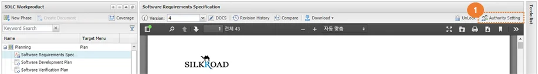 |
② ‘Phase Authority Settings’창이 생성된다.
③ ‘Authority’셀의 펼침단추를 클릭하여 프로젝트 참여자별 해당 문서에 대한 권한을 설정한다.
- Admin : 관리자 권한으로 읽기/쓰기 이외에 잠김 문서에 대한 편집 가능(프로젝트 관리자를 제외한 다른 사용자에 의해 잠긴 문서 잠금 해제 권한)
- Write : 읽기/쓰기 가능
- Read : 읽기만 가능
- None : 문서에 접근 권한이 없으며, 문서 내용이 표시되지 않음.
④ ‘Save’버튼을 클릭하여 저장한다.
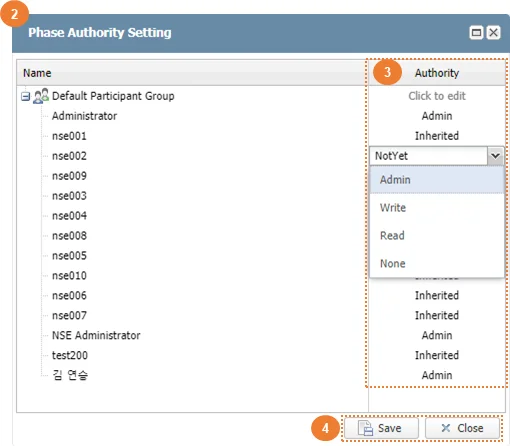 |
번호 | 메시지 | 설명 | 해결방안 |
|---|---|---|---|
1 | Unauthorized or erroneous approach. | 권한이 없는 사용자가 문서에 접근하는 경우 | |
2 | Error to load Publication Tree! | Publish 목록 불러오기를 실패하였을 경우 | |
3 | Unable to erase Phase or Document. | 문서 또는 Phase 삭제를 실패하였을 경우 | |
4 | Unable to erase Phase connected to Plan. | 계획관리시스템과 연계된 Phase 삭제를 실패하였을 경우 | |
5 | Unable to erase Phase. | 문서가 없는 Phase 삭제를 실패하였을 경우 | |
6 | Job failed. | Phase 삭제 및 해당 Phase의 문서들을 다른 Phase로 이동시키는데 실패하였을 경우 | |
7 | This document has been locked by another user. | 이미 다른 사용자에 의해 잠금 설정된 문서를 편집하고자 할 경우 | |
8 | This document is link item. | 링크 문서의 편집을 시도할 경우 | |
9 | There is no more relation in this document. | 커버리지 뷰에서 더 이상 표시할 요구사항이 없을 경우 | |
10 | Are you sure you want to delete "Document Name"? | ‘Document Name’을 가진 문서를 삭제 시도시 생성되는 경고문구 | |
11 | Phase is not empty. Do you want to delete all documents? | 문서가 등록되어 있는 Phase 삭제 시도시 생성되는 경고문구 | |
12 | Please open the document through its Target Menu. | Lock 이 걸린 문서에 대하여 Target Menu 지정시 생성 | |
13 | Can't move plan applied document to other | Target Menu가 지정된 Phase 에 등록된 문서를 이동시킬 경우 | |
14 | Object reference not set to an instance of an object. | DOCS로 퍼블리쉬한 문서가 서버에 정상적으로 저장되지 않음에 따라 문서선택시 문서뷰어에 표시되지 않을 경우 발생하는 문구 |